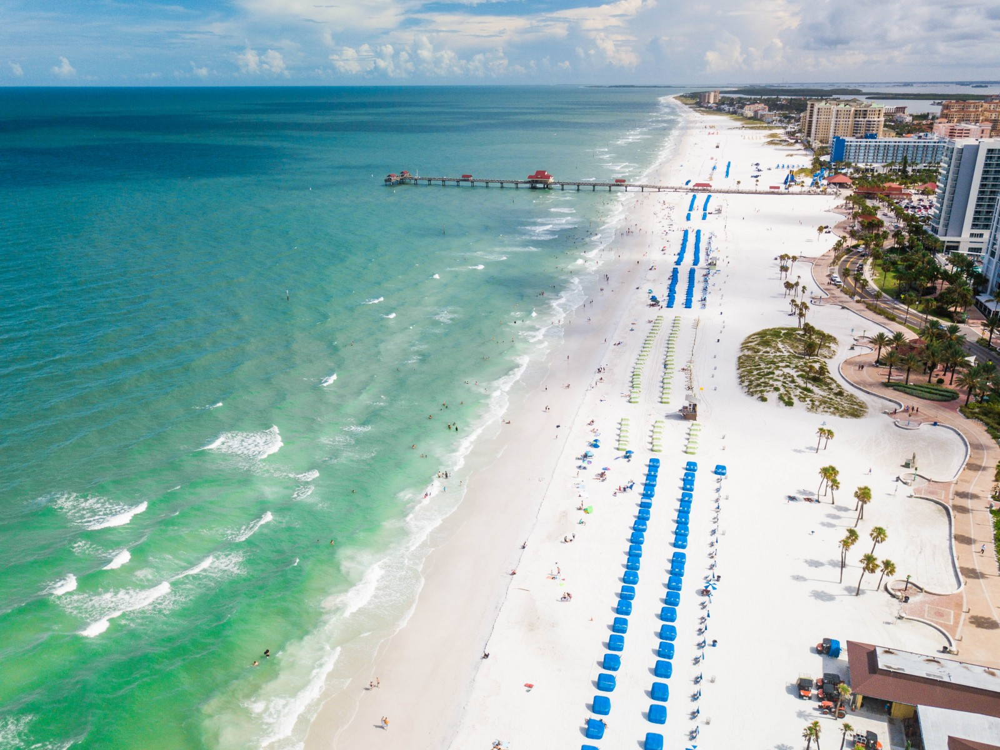

Welcome to Tampa Bay
The city of Tampa Bay is a great place to visit. You'll be amazed by our sprawling beaches, wild animals, and nightlife. There's something for everone to enjoy down in "The Big Guava!" 
There are many attractions to see in Tampa Bay. You may want to visit Busch Gardens, a 335-acre African themed park, or the Tampa City Zoo. The city is also filled with many restaurants and vendors. Grab a hot dog while watching this year's Super Bowl Champions, the Buccaneers, in Raymond James Stadium. The weather is always nice in Tampa. The palm trees will welcome you with open arms. Whether you are looking for a spot to vacation, or a city to settle down in, Tampa Bay is the place for you. For more information, contact: visit.tampa@Jeemail.com